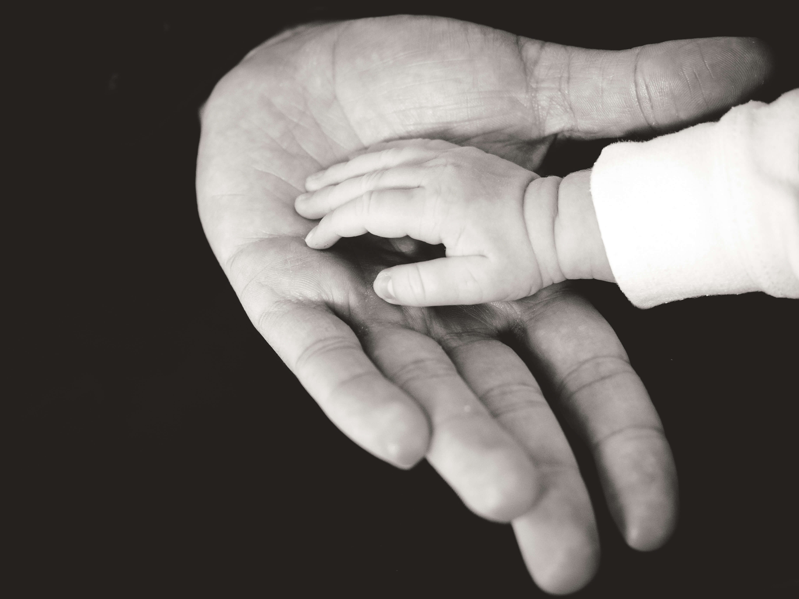
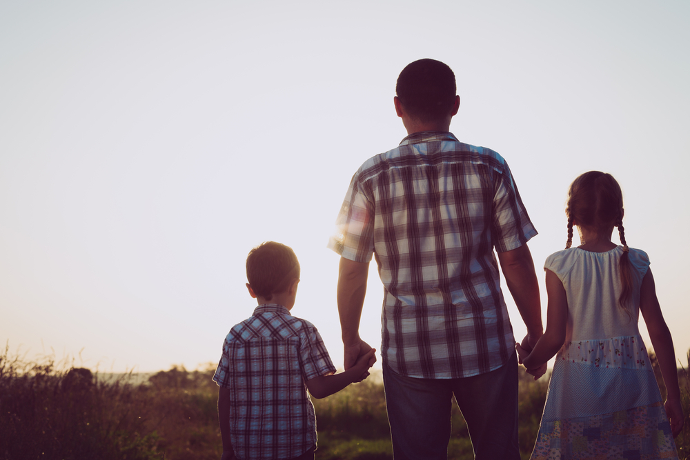

If you are asking how to go through this family crisis where you don't know how to react or what to do to help your kids, this is the place to start

Our kids Attention
November 20, 2022
TikTok, Snapchat and Instagram are the most popular social media platforms for our kids today, and especially our teenagers. We are the first generation of parents that are confronted with the battle for our kids’ time, their attention, and even their mental health.
Source -Dad Edge Podcast

Hopes and Dreams with your kids
November 18, 2022
Being a parent who is supportive of our kids, hopes and dreams is something some of us are on board with and others aren’t because it sometimes makes us uncertain.
Source -Dad Edge Podcast